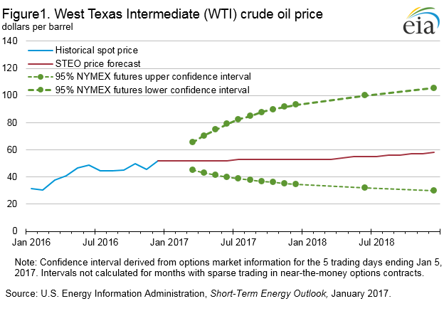
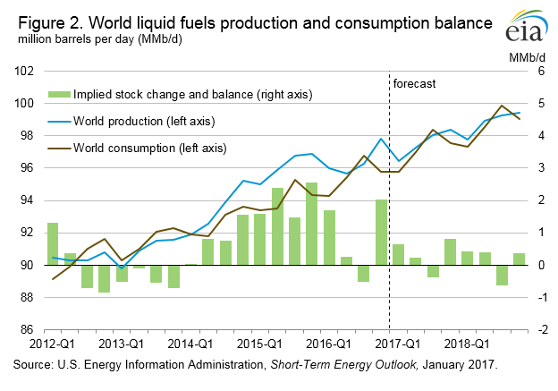
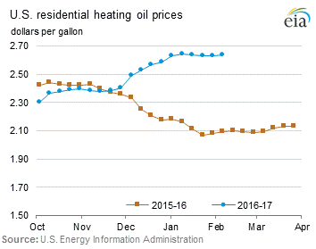
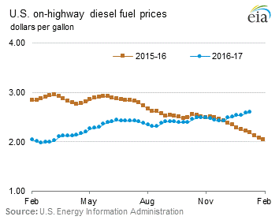
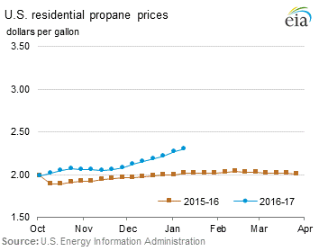
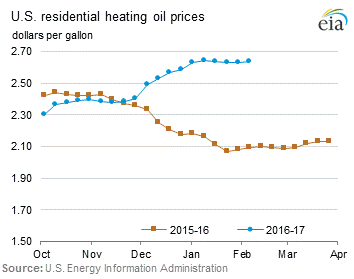
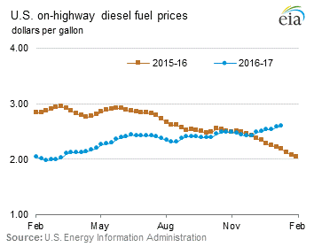
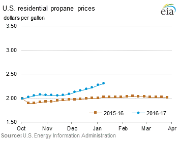
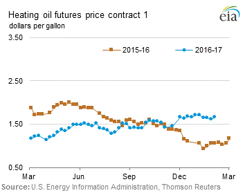
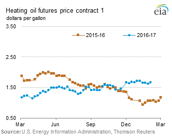

Release date: January 11, 2017 | Next release date: January 19, 2017
This Week in Petroleum 15th Anniversary This week marks 15 years since This Week in Petroleum (TWIP) was first published. TWIP was created to add analysis and context to EIA petroleum and liquid fuels data and market trends. Over the years, topics have ranged from crude imports to crude exports, increasing and decreasing gasoline consumption, product imports to product exports, biofuels, and many others. On behalf of the authors and editors, past and present, of This Week in Petroleum, we hope that you have enjoyed reading and will continue to do so in the years to come. Thank you for reading, This Week in Petroleum team
Average crude oil prices forecast to rise as markets move toward balance
The U.S. Energy Information Administration's (EIA) January Short-Term Energy Outlook (STEO) forecasts benchmark North Sea Brent and West Texas Intermediate (WTI) to average $53 per barrel (b) and $52/b, respectively, in 2017, close to their levels during the last three weeks of 2016. Average forecast prices rise to $56/b and $55/b, respectively, in 2018.
EIA's price forecasts have wide uncertainty bands, consistent with contract values for future delivery. For example, contacts traded during the five-day period ending January 5 suggest the market expects WTI prices could range from $35/b to $93/b (at the 95% confidence interval) in December 2017 (Figure 1). Strong demand and the recent agreement to reduce production among members of the Organization of the Petroleum Exporting Countries (OPEC), as well as key non-OPEC oil producers, are putting upward pressure on crude oil prices. However, forecast increases in global production should provide downward pressure on prices and mitigate the potential for significant crude oil price increases through 2018. Despite the recent OPEC agreement, EIA expects global petroleum and other liquid inventory builds to continue, but at a slowing rate, in 2017 and 2018.
Despite increases in global oil inventories and U.S. oil rig productivity, market reactions to the November OPEC agreement to cut production by 1.2 million barrels per day (b/d) starting in January 2017 contributed to rising oil prices in December, when average Brent prices were $9/b above their November level. In response to the price movement, in the January STEO, EIA increased its crude oil price forecast for both Brent and WTI by $2 from the December STEO forecast for 2017. The slight price discount of WTI to Brent in the forecast is based on the assumption of competition between the two crude oils in the U.S. Gulf Coast refinery market.
Brent crude oil spot prices are expected to remain fairly flat over 2017 due in part to the responsiveness of U.S. tight oil production to rising oil prices in late 2016.
EIA forecasts Brent prices will increase slowly in 2018, beginning the year at $54/b in January and ending the year at $59/b in December. During this time, inventory builds will slow, putting modest upward pressure on prices. This will encourage production increases, particularly in the Lower 48 onshore. However, any production increases realized while the global markets are building inventories will moderate price increases, which will in turn limit additional production increases.
Total U.S. crude oil production is estimated to have averaged 8.9 million b/d in 2016, down 0.5 million b/d from 2015, with all of the production decline in the Lower 48 onshore. EIA forecasts U.S. crude oil production will increase to an average of 9.0 million b/d in 2017 and 9.3 million b/d in 2018. Forecast production in 2017 is 0.2 million b/d higher than in the previous forecast, reflecting assumptions of higher drilling activity, drilling efficiency, and well-level productivity than in previous forecasts. On a quarterly basis, EIA expects U.S. crude oil production to increase from 8.9 million b/d in the fourth quarter of 2016 to 9.4 million b/d in the fourth quarter of 2018. In both 2017 and 2018, crude oil production in the third quarter decreases from the previous quarter, when EIA assumes some production declines because of hurricane-related outages.
In the previous forecast, EIA generally expected Lower 48 onshore production to decline through the end of 2017. However, the new forecast reflects crude oil prices near or above $50/b, which have led to increased investment by some U.S. production companies, particularly in the Permian Basin. EIA expects that declines in Lower 48 production have largely ended and forecasts relatively flat production in the first quarter of 2017 at 6.7 million b/d, which will then increase to an annual average of 7.0 million b/d in 2018. Even modest increases in crude oil prices could contribute to supply growth in other U.S. tight oil regions.
EIA estimates global petroleum and other liquids production will increase through the forecast. Annual estimated and forecast production levels for 2016, 2017, and 2018 were revised up to 96.4 million b/d, 97.5 million b/d, and 98.9 million b/d, respectively.
Significant upward revisions to historical consumption in the countries of the Organization for Economic Cooperation and Development (OECD) in mid-2016 have led to a revision in the historical global balances. The latest data show global petroleum and other liquids stock drew by 0.5 million b/d in the third quarter of 2016. While production was unchanged for the third quarter of 2016 compared to the previous forecast, global consumption of crude and liquid fuels was revised up by 0.6 million b/d. Inventory draws in the third quarter, however, were followed by large builds in the fourth quarter.
EIA estimates that crude and other liquids inventories increased by 2.0 million b/d in the fourth quarter of 2016, driven by an increase in production and a significant, but seasonal, drop in consumption. The production increase largely reflects OPEC members ramping up production in advance of implementing the November agreement on production cuts. Global production is expected to increase by 1.6 million b/d in the fourth quarter of 2016, with OPEC accounting for 0.9 million b/d, or 55%, of this increase. Additionally, large seasonal consumption declines of 1.0 million b/d in the fourth quarter of 2016 contribute to the stock build. This trend is not expected to last as global consumption of petroleum and liquids is forecast to grow at a faster rate than production through 2018, resulting in tighter markets (Figure 2).
Annual consumption for 2016 is estimated at 95.6 million b/d and is forecast to increase by 1.7% to 97.2 million b/d in 2017, compared with a growth rate of 1.1% for production. However, 0.4 million b/d of this increase reflects estimated growth in the use of hydrocarbon gas liquids such as ethane and propane, reflecting growth in production from natural gas processing. Consumption is forecast to grow by 1.6% in 2018 and average of 98.7 million b/d for the year, while production increases by 1.4% and remains slightly above consumption at 98.9 million b/d on an annual basis. However, consumption is greater than production in the third quarter of both 2017 and 2018.
U.S. average regular gasoline and diesel retail prices climb
The U.S. average regular gasoline retail price rose one cent from the previous week to $2.39 per gallon on January 9, up 39 cents from the same time last year. The West Coast and Rocky Mountain prices each increased three cents to $2.68 per gallon and $2.26 per gallon, respectively. The Gulf Coast price rose two cents to $2.17 per gallon and the East Coast price increased one cent to $2.40 per gallon. The Midwest price fell by less than one cent to $2.34 per gallon.
The U.S. average diesel fuel price rose one cent to $2.60 per gallon on January 9, 42 cents higher than a year ago. The West Coast price rose three cents to $2.87 per gallon, the East Coast price rose two cents to $2.65 per gallon, and the Midwest and Rocky Mountain prices each rose one cent to $2.55 per gallon and $2.54 per gallon, respectively. The Gulf Coast price fell by less than one cent, remaining at $2.45 per gallon.
Propane inventories fall
U.S. propane stocks decreased by 4.5 million barrels last week to 79.7 million barrels as of January 6, 2017, 12.2 million barrels (13.3%) lower than a year ago. Gulf Coast and Midwest inventories decreased by 3.8 million barrels and 1.2 million barrels, respectively, while Rocky Mountain/West Coast inventories remained virtually unchanged and East Coast inventories increased by 0.5 million barrels. Propylene non-fuel-use inventories represented 5.6% of total propane inventories.
Residential heating fuel prices increase
As of January 9, 2017, residential heating oil prices averaged $2.64 per gallon, one cent per gallon more than last week's price and nearly 48 cents per gallon higher than last year at this time. The average wholesale heating oil price is $1.77 per gallon, just over three cents per gallon less than last week but nearly 68 cents per gallon higher than a year ago.
Residential propane prices averaged $2.30 per gallon, up nearly three cents per gallon from last week and 28 cents per gallon more than a year ago. Wholesale propane prices averaged nearly $0.86 per gallon, virtually unchanged from last week and 42 cents per gallon higher than last year's price.
For questions about This Week in Petroleum, contact the Petroleum Markets Team at 202-586-4522.
Retail prices (dollars per gallon)
 





| Retail prices | Change from last | ||
|---|---|---|---|
| 01/09/17 | Week | Year | |
| Gasoline | 2.388 | 0.011 | 0.392 |
| Diesel | 2.597 | 0.011 | 0.420 |
| Heating Oil | 2.642 | 0.010 | 0.478 |
| Propane | 2.297 | 0.026 | 0.283 |
Futures prices (dollars per gallon*)
 

| Futures prices | Change from last | ||
|---|---|---|---|
| 01/06/17 | Week | Year | |
| Crude oil | 53.99 | 0.27 | 20.83 |
| Gasoline | 1.634 | -0.031 | 0.506 |
| Heating oil | 1.703 | -0.001 | 0.651 |
| *Note: Crude oil price in dollars per barrel. | |||
Stocks (million barrels)
| Stocks | Change from last | ||
|---|---|---|---|
| 01/06/17 | Week | Year | |
| Crude oil | 483.1 | 4.1 | 31.9 |
| Gasoline | 240.5 | 5.0 | 0.0 |
| Distillate | 170.0 | 8.4 | 4.5 |
| Propane | 79.659 | -4.464 | -12.199 |